1. 누가 무엇을 하나
학생·멘토·대학·기업·교육활동업체·운영자가 하는 일 — ★ = 새로 추가

2. 낸 과제가 거치는 단계
AI가 먼저 봐주고 → 멘토에게 맡기고 → 멘토를 못 구하면 AI가 대신 봐줌

3. 업체가 가입하고 이용하기까지 (새 기능)
직접 가입 → 운영자 승인 전엔 로그인 못 함 → 승인되면 이용 가능

4. 멤버십 결제 처리
결제 완료되면 멤버십 30일 시작 · 실패하면 등급 그대로

5. 정보 연결도 — 회원·계정
한 사람이 곧 학생·멘토·담당자 / 업체는 따로 로그인 계정 / 동의 기록

6. 정보 연결도 — 진로 성장
목표 직업 · 부족한 점 · 맞춤 계획(추천 이유) · 과제/제출/조언

7. 정보 연결도 — 결제·광고·제휴
멤버십/결제 · 업체 광고(클릭·신청) · 채용 공고 · 교육·공모전 소식

8. 기여표 — 황성권 · 장민 · 박도현
기능요소 · 주담당 · 기여내용 · 근거(커밋/캔버스)
황성권 — 학생 핵심·기획 장민 — 멘토·외부 생태계 박도현 — 수익화·품질/보안
| 기능요소 | 주담당 | 기여내용 (무엇을 / 어떻게) | 근거 (커밋 · 캔버스) |
|---|---|---|---|
| 데이터 기반 갭 진단 | 황성권 | 요구역량 대비 보유역량 점수화·시각화. 갭 0점 버그(활동 태그 미백필)를 태그 백필·진단 스냅샷 시드로 해결, 온보딩 역량 칩으로 신규 가입자 즉시 반영 | bba7cac, 0b262b7 · 캔버스 "진단" 블록 |
| AI 진로 로드맵 | 황성권 | 선배 합격경로 k≥5 코호트 기반 추천 + 추천 이유 부여, 표본 부족 시 직무 전체 폴백. KPI 발화·선배 정산 연동 보강 | 0037295, 7c6224c · 캔버스 "로드맵" 블록 |
| ISP 캔버스 작성·운용 | 황성권 | ISP 캔버스에 비전·4대목표·갭분석·이행과제·로드맵 블록 작성/보완, 루프별(002/003/004) 캔버스 복제·동결 스크립트 작성 | docs/ISP-AI진로로드맵.md, ddbm-isp-*.mjs (#60·#85·#87) |
| 멘토 검수·하이브리드 피드백 | 장민 | 제출물 상태머신(AI 1차→멘토 배정→완료 / 기한초과 시 재배정·AI폴백), 멘토 메인에 매핑 학생·미션 현황, AI+멘토 조언 결합 조회 | 620587f, d6a01d9, efc896b · missions.ts |
| 제휴사 포털 + 승인 게이트 | 장민 | edu_platform 로그인 SaaS 신설, 자체가입(로그인 잠금)→운영자 승인 게이트, 소식(피드물)·배너 발행·성과·삭제 | 84a6aeb, df00d5b, 9651c48 · partners/router.ts |
| AI 데모 토글 안전장치 | 장민 | 플래그 파일로 재시작 없이 OAuth 실연동 on/off, 기본 OFF + 2시간 자동 만료로 시연 후 노출 방지 | d86ec45, c96638e |
| 역할별 SaaS 수익모델·결제 | 박도현 | 4대 파트너 역할별 메인 분기 + 맞춤 멤버십/플랜, 기업 무료/멤버십 2단계화·요금 현실화, 결제 상태머신·멤버십 활성화 | fffb56d, 916ac9c, d8df442 · payments.ts |
| 세션·보안 안정화 + 품질 검증 | 박도현 | E2E로만 드러난 세션 버그 4건(refresh 토큰 회전 jti 충돌 등) 수정, 통합·E2E·성능 테스트(T039/T040/T043) 완비 | e211796 · 005-roles.integration.test.ts |
※ 모든 커밋은 공용 git 계정(vrmaker65)으로 push됨 — 인별 귀속은 팀 작업 분담 기준이며, 커밋 해시는 해당 기능의 구현·검증 공통 근거입니다.